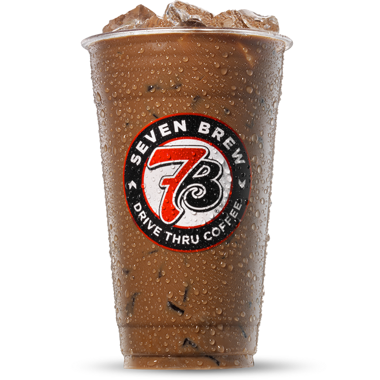

The Blondie
Caramel & Vanilla Breve
The Blondie is 7 Brew's absolute number one bestseller. Made with rich espresso, smooth half-and-half (breve milk), sweet caramel, and vanilla syrups, it delivers a rich, dessert-like coffee experience. You can enjoy it hot, iced, or blended as a frozen chiller.

7 Brew Blondie Prices & Sizes
How to Make a Copycat 7 Brew Blondie at Home
Can't make it to a drive-thru stand? Here is the exact copycat barista recipe to mix a perfect iced Blondie breve in your kitchen.
Ingredients
- 2 shots of fresh espresso
- 1/2 oz Torani Caramel Syrup
- 1/2 oz Torani Vanilla Syrup
- 6 oz Half-and-Half (breve milk)
- 1 cup of ice
Step-by-Step Instructions
- Prepare Syrup Base: In a tall glass, pump 1/2 oz (approx. 1 tablespoon) of caramel syrup and 1/2 oz of vanilla syrup.
- Add Espresso: Brew 2 fresh espresso shots directly over the syrups and stir to melt them.
- Add Ice and Milk: Fill the glass to the top with ice. Pour 6 oz of cold half-and-half over the ice and stir thoroughly to blend the milk with the syrup-coffee base.
Frequently Asked Questions
Can I make the 7 Brew Blondie sugar-free?
Yes! 7 Brew offers both sugar-free caramel and sugar-free vanilla syrups. You can request a "Sugar-Free Blondie" at the stand to reduce the calorie count significantly.
What makes a Blondie a "breve"?
A "breve" is a standard coffee drink made using half-and-half (cream and whole milk mix) instead of regular whole or skim milk. This gives the Blondie its signature rich, velvety mouthfeel.